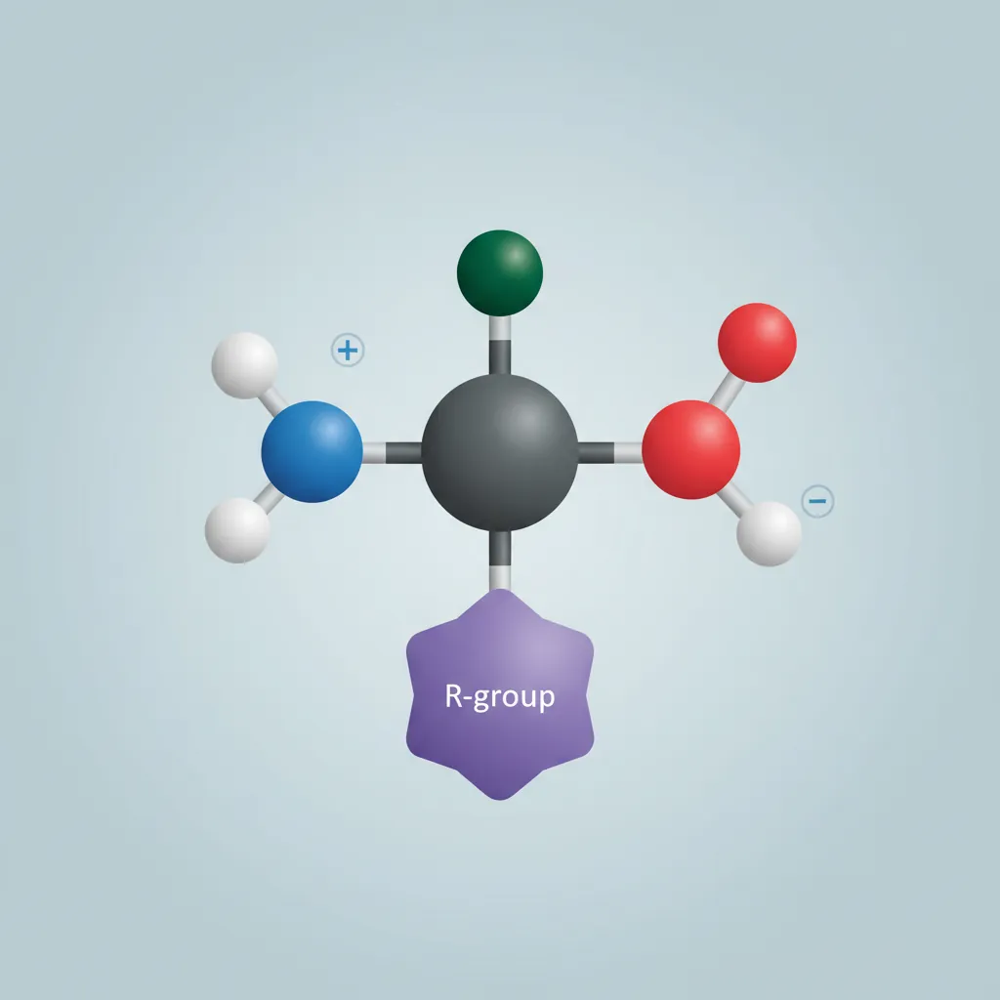
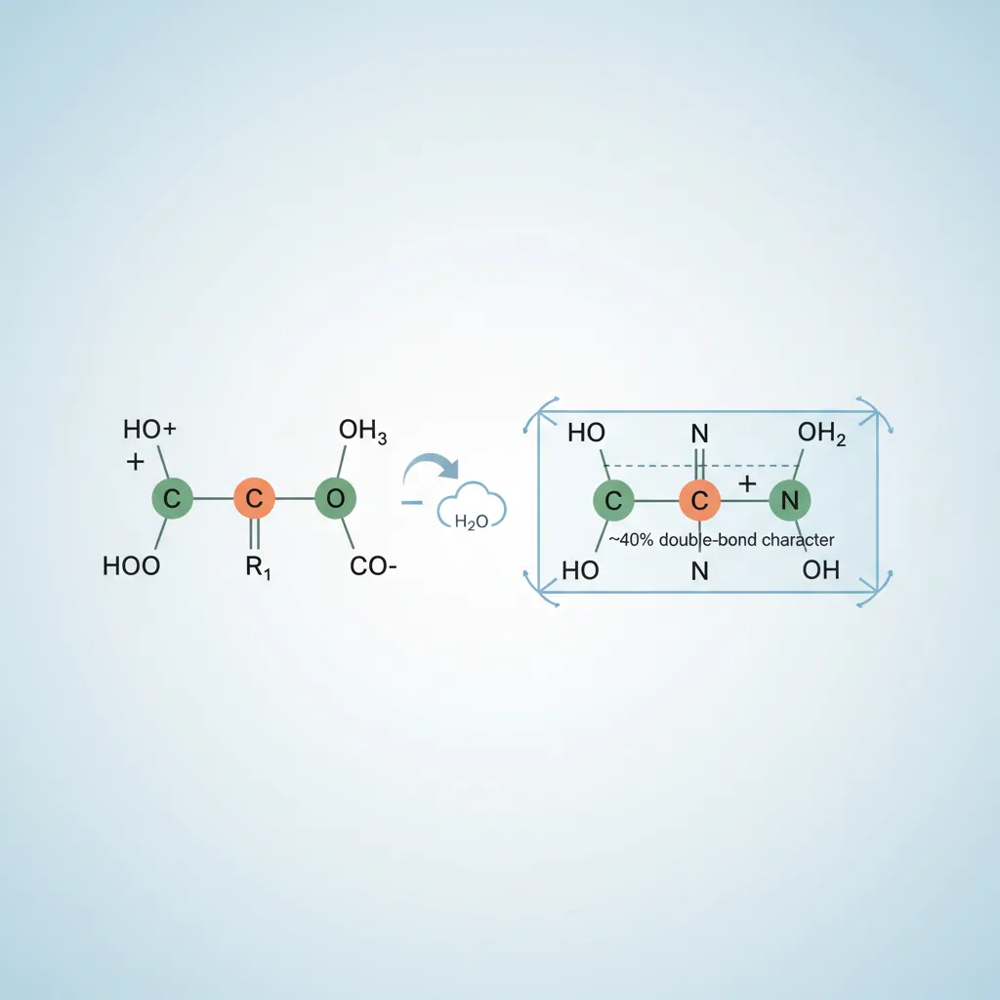
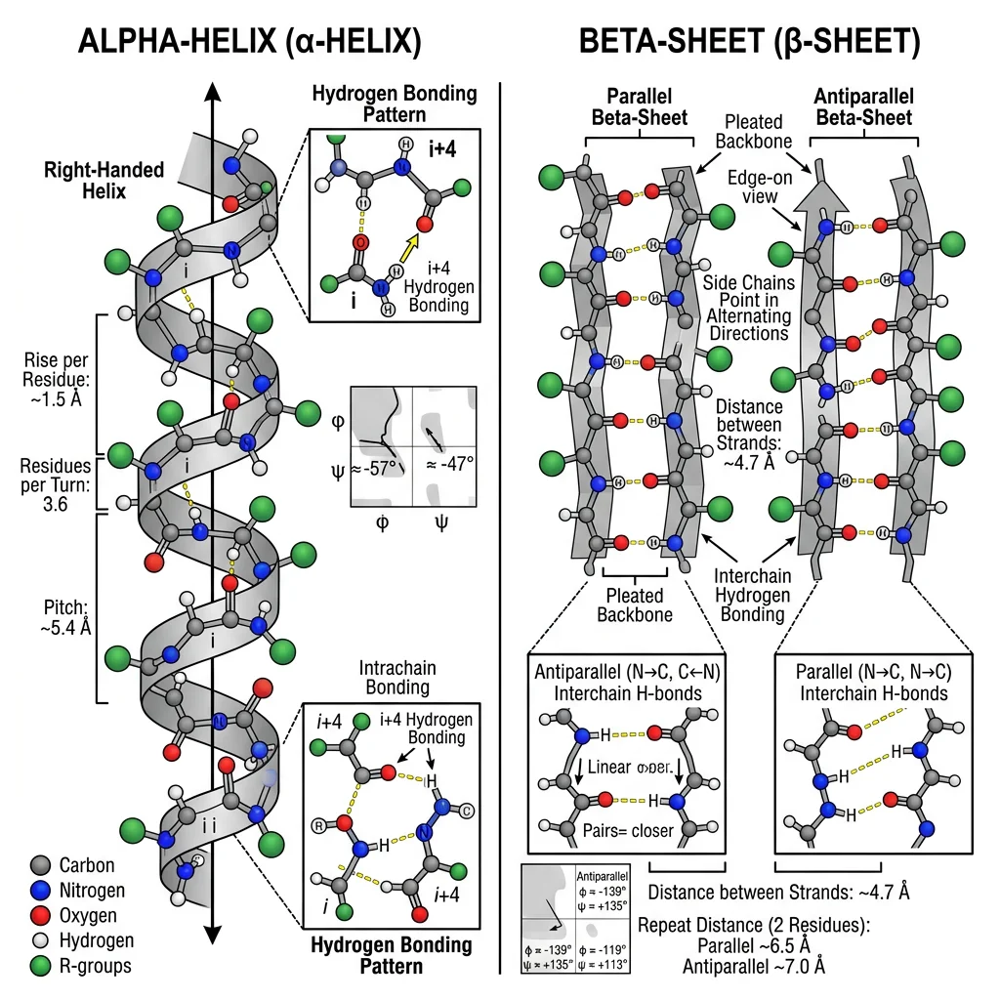
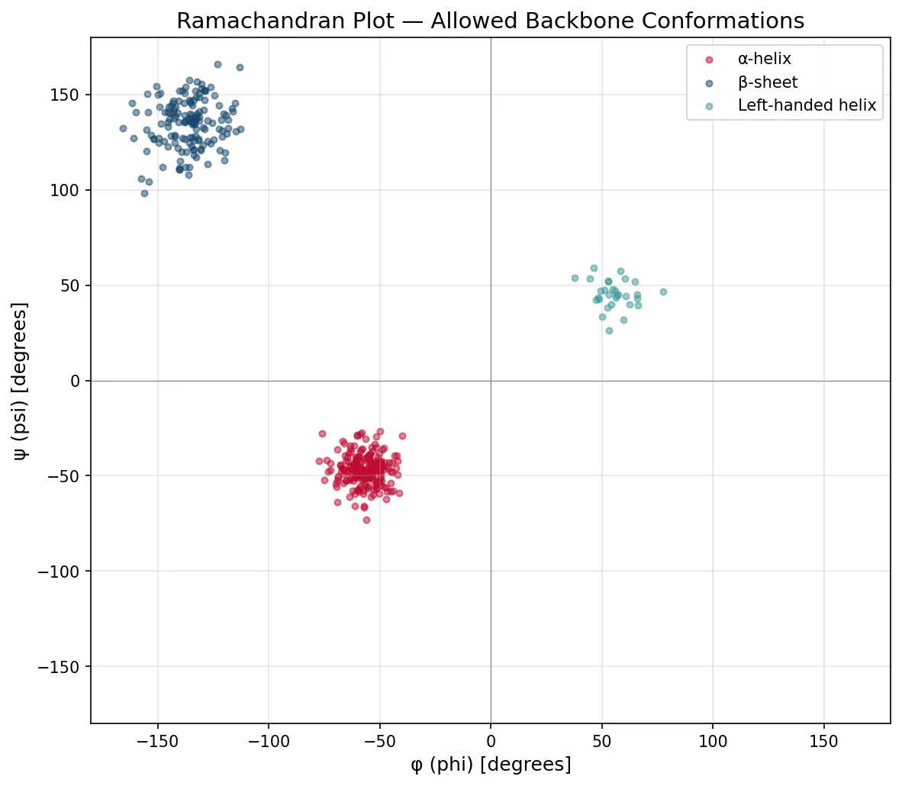
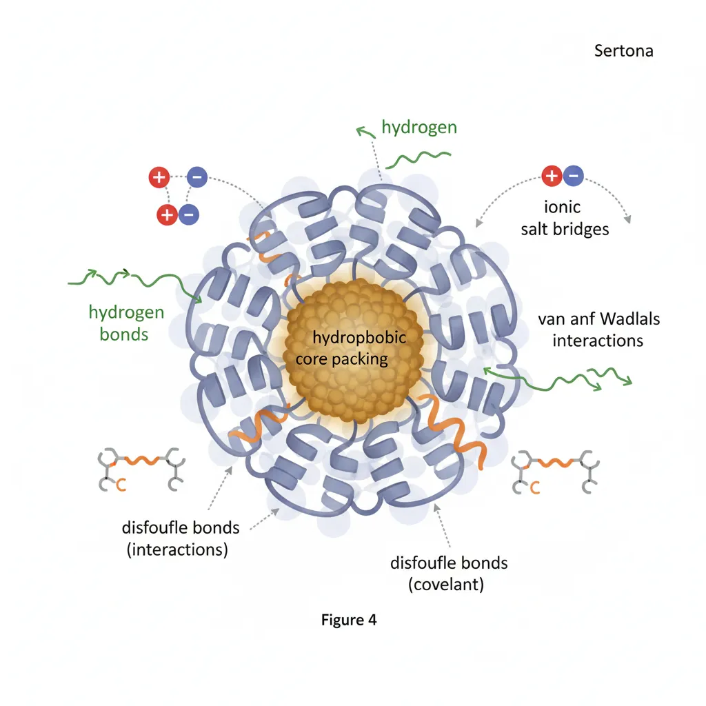
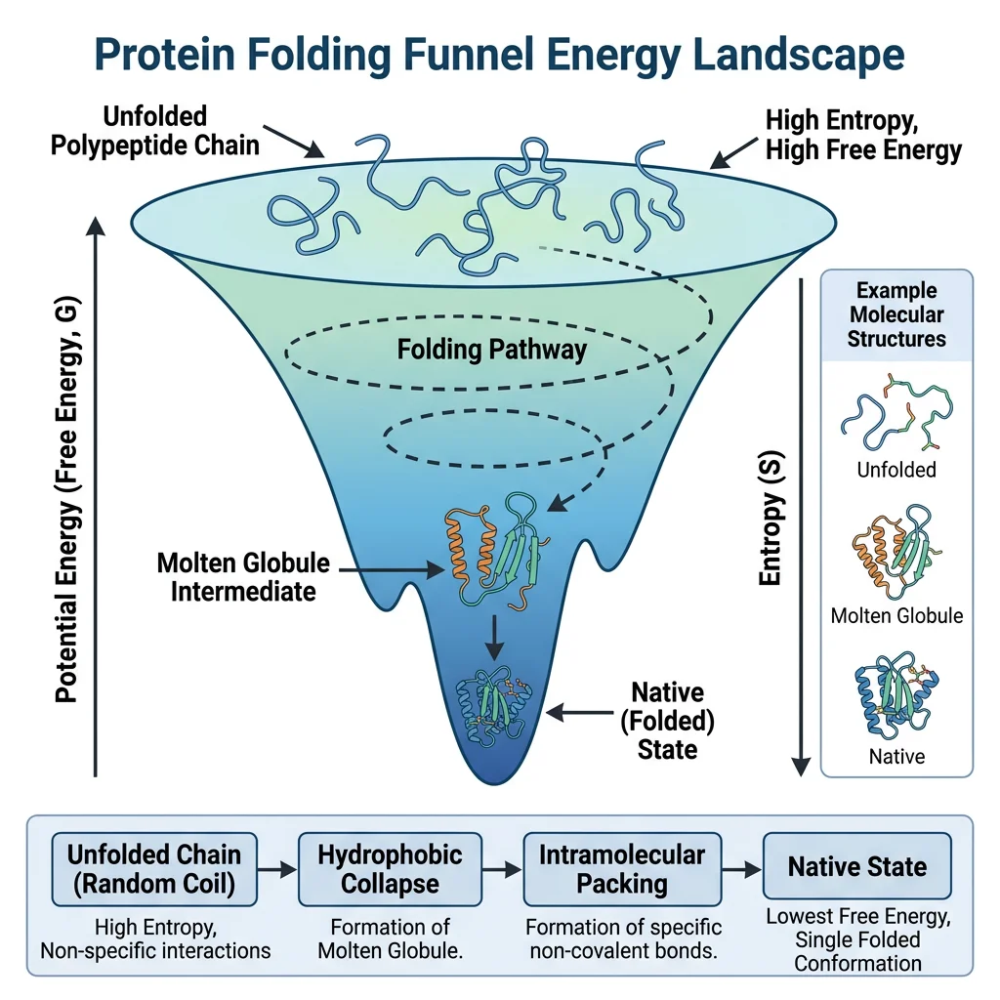
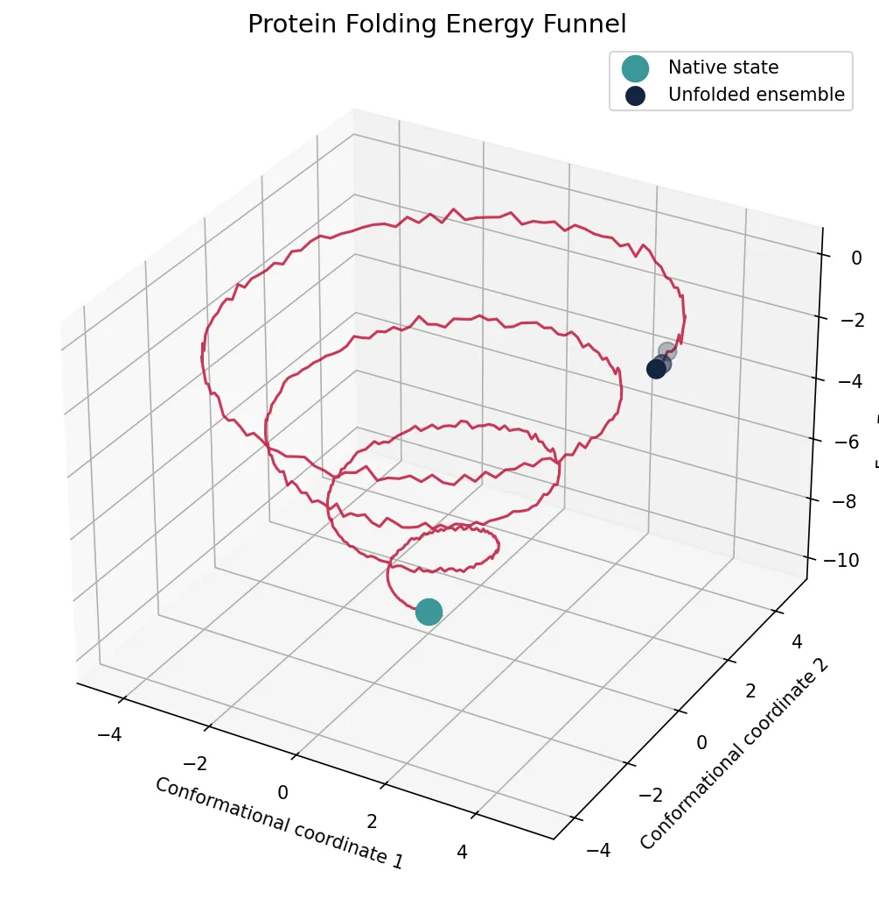

Biochemistry Mastery
Biological Chemistry Fundamentals
Atoms, bonds, functional groups, thermodynamicsWater, pH & Biological Buffers
Water polarity, pH, Henderson-Hasselbalch, blood buffersAmino Acids & Protein Structure
Amino acid classes, peptide bonds, protein foldingEnzymes & Catalysis
Kinetics, Michaelis-Menten, inhibition, regulationCarbohydrates & Lipids
Sugars, glycogen, fatty acids, cholesterol, membranesMetabolism & Bioenergetics
ATP, glycolysis, gluconeogenesis, redox carriersCitric Acid Cycle & Oxidative Phosphorylation
Acetyl-CoA, ETC, ATP synthase, oxygen dependenceSignal Transduction & Cell Communication
GPCRs, kinases, calcium, hormone cascadesNucleic Acids & Gene Expression
DNA, replication, transcription, translation, epigeneticsBrain & Nervous System Biochemistry
Neurotransmitters, ion gradients, myelin, neurodegenerationHeart & Muscle Biochemistry
Cardiac metabolism, actin-myosin, energy systemsLiver Biochemistry
Glucose homeostasis, detox, urea cycle, bileKidney Biochemistry & Acid-Base
pH regulation, ion transport, hormonal functionsEndocrine System Biochemistry
Hormone classes, signaling, glucose & stress controlDigestive System Biochemistry
Gastric acid, enzymes, bile, absorption, microbiomeImmune System Biochemistry
Antibodies, cytokines, complement, oxidative burstAdipose Tissue & Energy Balance
Triglycerides, lipolysis, leptin, obesityTissue-Specific Metabolism
Fed vs fasting, organ fuel selection, starvationMolecular Basis of Disease
Diabetes, cancer metabolism, neurodegenerationClinical Biochemistry & Diagnostics
Blood tests, liver/kidney markers, lipid panelsAmino Acid Chemistry
Amino acids are the monomeric building blocks of proteins — the workhorses of biology. There are 20 standard amino acids encoded by the genetic code, each sharing a common backbone but differing in their side chain (R group), which determines their chemical personality. Understanding amino acid chemistry is essential because every aspect of protein behavior — folding, catalysis, binding, regulation — ultimately traces back to the properties of these 20 molecules.

Stereochemistry: L vs D Configuration
Except for glycine (R = H), all amino acids have a chiral α-carbon and exist as two enantiomers: L (levo) and D (dextro). Biological proteins use exclusively L-amino acids — one of the deepest mysteries in biochemistry. Why did life choose L over D? The answer remains unknown, though some theories invoke circularly polarized light from neutron stars or parity violation in the weak nuclear force.
Analogy: Think of L and D amino acids as left and right shoes. Although chemically identical in most reactions (like left and right shoes weigh the same), they behave differently in a chiral environment (your feet). Enzymes are "chiral environments" — built from L-amino acids, they only accommodate L-substrates, just as your left foot only fits a left shoe.
Classification
The 20 amino acids are classified by the chemical properties of their R groups, which determine how they interact with water, other amino acids, and substrates:
| Category | Amino Acids | Key Property | Location in Protein |
|---|---|---|---|
| Nonpolar / Hydrophobic | Gly (G), Ala (A), Val (V), Leu (L), Ile (I), Pro (P), Met (M) | Aliphatic chains; avoid water | Interior of globular proteins |
| Aromatic | Phe (F), Trp (W), Tyr (Y) | Aromatic rings; absorb UV at 280 nm (Trp, Tyr) | Interior or membrane-spanning regions |
| Polar / Uncharged | Ser (S), Thr (T), Cys (C), Asn (N), Gln (Q) | H-bond donors/acceptors; Cys forms disulfide bonds | Surface or active sites |
| Positively Charged (+) | Lys (K), Arg (R), His (H) | Basic side chains; + charge at pH 7.4 (His partially) | Surface; DNA-binding; enzyme active sites (His) |
| Negatively Charged (−) | Asp (D), Glu (E) | Acidic side chains; − charge at pH 7.4 | Surface; metal coordination; active sites |
Amino Acids with Special Properties
Glycine (Gly, G): The smallest amino acid (R = H). Only non-chiral amino acid. Its small size allows it to fit in tight turns and provides backbone flexibility.
Proline (Pro, P): The only amino acid with a cyclic side chain bonded to the backbone nitrogen, making it an imino acid. Proline introduces rigid kinks in the polypeptide chain and is a "helix breaker" in α-helices. Abundant in collagen (every 3rd residue).
Cysteine (Cys, C): Contains a thiol (−SH) group that can form disulfide bonds (−S−S−) with another cysteine, covalently cross-linking parts of a protein or between different proteins. Essential for the structure of secreted proteins and antibodies.
Histidine (His, H): Its imidazole side chain has a pKa of ~6.0, meaning it can switch between protonated and deprotonated forms near physiological pH — ideal for enzyme catalysis (proton shuttle).
Ionization & pI
Amino acids are polyprotic acids — they have multiple ionizable groups. At different pH values, these groups gain or lose protons, changing the overall charge of the molecule:
Titration of a Simple Amino Acid (Alanine)
Alanine has two ionizable groups: α-COOH (pKa1 = 2.34) and α-NH₃⁺ (pKa2 = 9.69). As we titrate from low to high pH:
- pH < 2: Both groups protonated → H₃N⁺−CHR−COOH → net charge = +1
- pH = 2.34 (pKa1): Half of −COOH deprotonated → midpoint of first titration plateau
- pH = 6.01 (pI): Zwitterion → H₃N⁺−CHR−COO⁻ → net charge = 0
- pH = 9.69 (pKa2): Half of −NH₃⁺ deprotonated → midpoint of second titration plateau
- pH > 10: Both groups deprotonated → H₂N−CHR−COO⁻ → net charge = −1
import numpy as np
# Amino acid ionization calculator
# Calculate charge at any pH for amino acids with known pKa values
def amino_acid_charge(pH, pKa_values):
"""Calculate net charge at given pH
For each group: charge contribution = -1 (for COOH) or +1 (for NH3+)
Fraction protonated = 1 / (1 + 10^(pH - pKa))
"""
charge = 0
for pKa, group_type in pKa_values:
frac_protonated = 1 / (1 + 10**(pH - pKa))
if group_type == 'acid': # -COOH: protonated = 0 charge, deprotonated = -1
charge += -1 * (1 - frac_protonated)
elif group_type == 'base': # -NH3+: protonated = +1, deprotonated = 0
charge += +1 * frac_protonated
return charge
# Define amino acids with pKa values
amino_acids = {
'Alanine': [(2.34, 'acid'), (9.69, 'base')],
'Glutamate': [(2.19, 'acid'), (4.25, 'acid'), (9.67, 'base')],
'Lysine': [(2.18, 'acid'), (8.95, 'base'), (10.53, 'base')],
'Histidine': [(1.82, 'acid'), (6.00, 'base'), (9.17, 'base')],
}
print("Amino Acid Charges at Different pH Values")
print("-" * 65)
print(f"{'Amino Acid':12s} | {'pH 1':>6s} | {'pH 4':>6s} | {'pH 7':>6s} | {'pH 10':>6s} | {'pI':>5s}")
print("-" * 65)
for name, pKas in amino_acids.items():
charges = [amino_acid_charge(ph, pKas) for ph in [1, 4, 7, 10]]
# Find pI (pH where charge is closest to 0)
ph_range = np.arange(0, 14, 0.01)
charges_all = [amino_acid_charge(ph, pKas) for ph in ph_range]
pI = ph_range[np.argmin(np.abs(charges_all))]
print(f"{name:12s} | {charges[0]:+6.2f} | {charges[1]:+6.2f} | {charges[2]:+6.2f} | {charges[3]:+6.2f} | {pI:5.2f}")
Peptide Bonds & Primary Structure
Amino acids polymerize into proteins through peptide bonds — covalent amide linkages formed by a condensation reaction between the α-carboxyl group of one amino acid and the α-amino group of the next, releasing one molecule of water.

Peptide Bond Characteristics
The peptide bond is not a simple single bond. Due to resonance between the C=O and C−N bonds, the peptide bond has approximately 40% double-bond character, which has profound structural consequences:
| Property | Description | Impact on Protein Structure |
|---|---|---|
| Planarity | All atoms in C−C(=O)−N−H lie in the same plane | Restricts free rotation; creates rigid planar units |
| Trans configuration | R groups on adjacent α-carbons are on opposite sides (~99.95%) | Minimizes steric clashes; Pro-Xaa bonds can be cis (~5%) |
| Bond length | C−N = 1.33 Å (between single 1.47 and double 1.25 Å) | Intermediate character limits rotation |
| Phi (φ) rotation | Rotation around N−Cα bond — free but sterically constrained | Determines backbone dihedral angles (Ramachandran plot) |
| Psi (ψ) rotation | Rotation around Cα−C bond — free but sterically constrained | Determines backbone dihedral angles (Ramachandran plot) |
The Ramachandran Plot — G. N. Ramachandran (1963)
Indian biophysicist G. N. Ramachandran mathematically mapped all sterically allowed combinations of φ and ψ angles for each amino acid residue. The resulting Ramachandran plot shows that only certain regions of φ/ψ space are populated — clusters that correspond exactly to α-helices (φ ≈ −57°, ψ ≈ −47°), β-sheets (φ ≈ −135°, ψ ≈ +135°), and turns. Glycine, being the smallest amino acid, has the largest allowed region; proline, the most restricted. This plot remains a fundamental validation tool for protein crystal structures — residues in disallowed regions indicate modeling errors.
Primary Structure
Primary structure is simply the linear sequence of amino acids in a polypeptide chain, read from the N-terminus (free amino group) to the C-terminus (free carboxyl group). It is fully determined by the gene encoding the protein.
The primary structure dictates all higher levels of structure. A single amino acid change can have devastating consequences — as in sickle cell disease, where Glu6Val in hemoglobin's β-chain causes polymerization of deoxy-HbS, distorting red blood cells into a sickle shape.
Secondary Structure
Secondary structure refers to regular, repeating local folding patterns stabilized by hydrogen bonds between backbone N−H and C=O groups. These are not side-chain interactions — they involve only the peptide backbone, making them universal structural elements. The two major types — the α-helix and the β-sheet — were predicted by Linus Pauling and Robert Corey in 1951, before any protein crystal structure had been solved.

Alpha-Helix (α-Helix)
The α-helix is a right-handed spiral in which each backbone C=O forms a hydrogen bond with the N−H of the residue four positions ahead (i → i+4). This creates a tightly wound helix with 3.6 residues per turn and a rise of 5.4 Å per turn (1.5 Å per residue).
| Property | Value | Significance |
|---|---|---|
| Residues per turn | 3.6 | Side chains project outward every 100° rotation |
| Rise per residue | 1.5 Å | Compact structure compared to extended β-strand (3.5 Å) |
| H-bond pattern | i → i+4 | Parallel to helix axis; ~13-atom rings |
| Dipole moment | N⁺ → C⁻ | Partial + at N-terminus; stabilized by negatively charged ligands |
| Helix breakers | Pro (breaks), Gly (too flexible) | Proline introduces a kink; glycine destabilizes via entropy |
| Helix formers | Ala, Leu, Met, Glu | Moderate-sized, uncharged side chains favor helix |
α-Helices in Membrane Proteins
Transmembrane proteins span the lipid bilayer using α-helical segments of ~20 hydrophobic amino acids (enough to traverse the ~30 Å membrane). These helices bundle together in multi-pass proteins like GPCRs (7 transmembrane helices) and ion channels. The α-helix is ideal for membrane spanning because all backbone hydrogen bonds are internally satisfied — no polar groups are exposed to the hydrophobic lipid interior. Mutations that insert charged residues into transmembrane helices cause severe diseases, as in cystic fibrosis (CFTR ΔF508 mutation disrupting helix folding).
Beta-Sheet (β-Sheet)
β-sheets form when two or more polypeptide segments (β-strands) align side-by-side with hydrogen bonds running perpendicular to the strand direction. Each strand is nearly fully extended (3.5 Å rise per residue), and side chains alternate above and below the sheet plane.
| Feature | Parallel β-Sheet | Antiparallel β-Sheet |
|---|---|---|
| Strand direction | Same N→C direction | Alternating N→C and C→N |
| H-bond geometry | Angled — slightly weaker | Linear — optimal strength |
| Common proteins | Flavodoxin, TIM barrel (parallel β/α barrel) | Immunoglobulins, silk fibroin, β-barrel porins |
| Loop connections | Long loops or α-helical crossovers | β-turns (tight 4-residue turns) |
Other Secondary Structure Elements
Beyond helices and sheets, proteins contain β-turns (tight 180° turns involving 4 residues, often with Pro and Gly), loops (irregular connectors that often form functional sites — enzyme active sites, antibody CDR loops), and 310 helices (tighter helices with i → i+3 H-bonds, less stable, found at helix termini).
import numpy as np
import matplotlib
matplotlib.use('Agg')
import matplotlib.pyplot as plt
# Generate a Ramachandran plot showing allowed secondary structure regions
phi_helix = np.random.normal(-57, 8, 200)
psi_helix = np.random.normal(-47, 8, 200)
phi_beta = np.random.normal(-135, 12, 150)
psi_beta = np.random.normal(135, 12, 150)
phi_left = np.random.normal(57, 10, 30)
psi_left = np.random.normal(47, 10, 30)
fig, ax = plt.subplots(1, 1, figsize=(8, 7))
ax.scatter(phi_helix, psi_helix, alpha=0.5, s=15, c='#BF092F', label='α-helix')
ax.scatter(phi_beta, psi_beta, alpha=0.5, s=15, c='#16476A', label='β-sheet')
ax.scatter(phi_left, psi_left, alpha=0.5, s=15, c='#3B9797', label='Left-handed helix')
ax.set_xlim(-180, 180)
ax.set_ylim(-180, 180)
ax.set_xlabel('φ (phi) [degrees]', fontsize=12)
ax.set_ylabel('ψ (psi) [degrees]', fontsize=12)
ax.set_title('Ramachandran Plot — Allowed Backbone Conformations', fontsize=14)
ax.axhline(y=0, color='gray', linewidth=0.5)
ax.axvline(x=0, color='gray', linewidth=0.5)
ax.legend(fontsize=10)
ax.grid(True, alpha=0.3)
plt.tight_layout()
plt.savefig('ramachandran_plot.png', dpi=150)
plt.show()
print("α-helix center: φ = -57°, ψ = -47°")
print("β-sheet center: φ = -135°, ψ = +135°")
print("Glycine: allowed in ALL regions (smallest R-group)")
print("Proline: restricted to small region (rigid ring)")

Tertiary & Quaternary Structure
Tertiary structure is the overall three-dimensional shape of a single polypeptide chain — the complete spatial arrangement of all its atoms. While secondary structure involves only backbone interactions, tertiary structure is driven primarily by interactions among side chains (R-groups), especially the burial of hydrophobic residues in the protein's interior.

Forces Stabilizing Tertiary Structure
| Force | Strength | Example | Role |
|---|---|---|---|
| Hydrophobic effect | Major driving force | Val, Ile, Leu, Phe cluster in core | Creates protein interior; excludes water |
| Hydrogen bonds | 2–5 kcal/mol each | Ser−OH···O=C−Asp | Specificity; surface interactions |
| Ionic (electrostatic) | 3–7 kcal/mol (in low ε) | Lys⁺···⁻Glu salt bridges | Surface stabilization; binding sites |
| Disulfide bonds | ~60 kcal/mol (covalent) | Cys−S−S−Cys | Locks structure; common in secreted proteins |
| Van der Waals | 0.4–4 kcal/mol | Close-packed atoms in hydrophobic core | Cumulative effect; tight interior packing |
| Metal coordination | Variable (often strong) | Zn²⁺ in zinc fingers (His/Cys ligands) | Structural stabilization; catalytic sites |
The First Protein Structure — Myoglobin (John Kendrew, 1958)
John Kendrew solved the first ever three-dimensional protein structure — sperm whale myoglobin — using X-ray crystallography at 6 Å resolution (later refined to 2 Å in 1960). The structure revealed a compact, globular protein with eight α-helices (labeled A–H) wrapping around a central heme group. The hydrophobic interior was packed with nonpolar residues (Val, Leu, Ile, Phe), while polar and charged residues decorated the water-exposed surface. This confirmed the "oil drop" model of protein folding. Kendrew and Max Perutz (who solved hemoglobin) shared the 1962 Nobel Prize in Chemistry.
Protein Domains & Motifs
Large proteins are often organized into independently folding units called domains (typically 50–350 residues). Domains are evolutionary units — they can be shuffled between proteins through gene recombination. Common structural motifs include:
- β-α-β motif: Two parallel β-strands connected by an α-helix (found in Rossmann fold — NAD⁺-binding)
- Greek key motif: Four antiparallel β-strands arranged like the Greek key pattern on pottery
- β-barrel: Closed cylinder of antiparallel β-strands (porins, GFP)
- Helix-turn-helix: DNA-binding motif in transcription factors
- Coiled-coil: Two α-helices wound around each other (leucine zippers, keratin)
- TIM barrel (β/α barrel): Eight parallel β-strands surrounded by eight α-helices — the most common enzyme fold
Quaternary Structure
Quaternary structure describes the arrangement of multiple polypeptide subunits (protomers) into a functional multi-subunit complex. Not all proteins have quaternary structure — only those composed of two or more chains.
| Protein | Subunit Composition | Symmetry | Functional Significance |
|---|---|---|---|
| Hemoglobin | α₂β₂ (tetramer) | C2 | Cooperative O₂ binding; allosteric regulation |
| Immunoglobulin G | H₂L₂ (2 heavy + 2 light chains) | C2 | Antigen recognition + effector functions |
| Collagen | Triple helix (3 chains) | C3 | Tensile strength; Gly-X-Y repeats |
| RNA polymerase II | 12 subunits | Asymmetric | Complex catalytic machinery for mRNA synthesis |
| GroEL/GroES | 14-mer (GroEL) + 7-mer (GroES) | D7 | ATP-dependent protein folding chamber |
| Proteasome (20S) | α₇β₇β₇α₇ (28 subunits) | D7 | Barrel-shaped proteolytic degradation machine |
Protein Folding & Chaperones
How does a polypeptide chain — a flexible polymer with an astronomically large number of possible conformations — fold into a single, precise three-dimensional structure in milliseconds to seconds? This is the protein folding problem, one of the greatest challenges in molecular biology.

Anfinsen's Experiment — The Thermodynamic Hypothesis (1961)
Christian Anfinsen demonstrated that the amino acid sequence alone contains all the information needed for a protein to fold. He denatured ribonuclease A (124 residues, 4 disulfide bonds) with 8M urea + β-mercaptoethanol, completely unfolding it and reducing all disulfide bonds. Upon slowly removing the denaturant via dialysis in the presence of trace β-ME, the enzyme spontaneously refolded to its native, fully active conformation — with the correct 4 out of 105 possible disulfide pairings. This proved that the native structure is the thermodynamically most stable state and earned Anfinsen the 1972 Nobel Prize in Chemistry.
Levinthal's Paradox & the Folding Funnel
Cyrus Levinthal (1969) calculated that if a 100-residue protein sampled all possible conformations randomly (3¹⁰⁰ possibilities, each taking 10⁻¹³ s), it would take longer than the age of the universe to find the native state. Yet proteins fold in microseconds to seconds. The resolution is that folding does NOT involve random searching.
Protein Misfolding & Disease
When proteins fail to fold correctly, the consequences can be devastating. Misfolded proteins can aggregate into toxic structures:
| Disease | Misfolded Protein | Aggregate Type | Mechanism |
|---|---|---|---|
| Alzheimer's disease | Amyloid-β (Aβ42), Tau | Amyloid plaques, neurofibrillary tangles | Aβ cleavage → aggregation → neurotoxicity |
| Parkinson's disease | α-Synuclein | Lewy bodies | Misfolding → fibril formation in dopaminergic neurons |
| Huntington's disease | Huntingtin (polyQ expansion) | Nuclear inclusions | CAG repeat → expanded polyglutamine tract |
| Prion diseases (CJD) | PrPˢᶜ (misfolded PrPᶜ) | Amyloid | Infectious misfolding: PrPˢᶜ converts PrPᶜ |
| Cystic fibrosis | CFTR (ΔF508) | ER-retained, degraded | Single aa deletion → misfolding → degradation |
| Type 2 diabetes | IAPP (amylin) | Islet amyloid | β-cell amyloid → cell death |
Molecular Chaperones
In the crowded cellular environment (300–400 mg/mL protein), newly synthesized polypeptides face a high risk of misfolding and aggregation. Molecular chaperones are proteins that assist folding without becoming part of the final structure. They don't provide folding information — they prevent aggregation and give polypeptides a chance to find their native state.
| Chaperone System | Mechanism | ATP Required? | Substrate Size |
|---|---|---|---|
| Hsp70 (DnaK) | Binds exposed hydrophobic segments; cycles between open (ATP) and closed (ADP) states with co-chaperones Hsp40 (DnaJ) and NEF (GrpE) | Yes | Small to medium (~15–30 kDa) |
| Hsp90 | Stabilizes metastable client proteins (kinases, steroid receptors, transcription factors); late-stage folding | Yes | Signaling proteins |
| Chaperonins (GroEL/GroES) | Sequester misfolded proteins inside an enclosed cavity ("Anfinsen cage"); provide hydrophilic environment for folding | Yes (7 ATP/cycle) | 20–60 kDa (fits in cavity) |
| Small Hsps (sHsps) | ATP-independent "holdases"; trap partially unfolded proteins during heat stress, prevent aggregation | No | Various |
| Calnexin/Calreticulin | ER-resident lectin chaperones; quality control for glycoprotein folding via glucose trimming cycle | No (uses UDP-glucose) | Glycoproteins |
AlphaFold2 — Solving Protein Structure Prediction
In December 2020, DeepMind's AlphaFold2 achieved near-experimental accuracy in predicting protein structures from amino acid sequences alone at the CASP14 competition. With a median GDT score of 92.4 (>90 is considered competitive with experiment), AlphaFold effectively solved the 50-year-old structure prediction problem. By 2022, DeepMind had predicted structures for nearly all ~200 million known protein sequences, democratizing structural biology. Demis Hassabis and John Jumper won the 2024 Nobel Prize in Chemistry for this achievement. AlphaFold demonstrates that primary sequence truly does encode 3D structure — Anfinsen's hypothesis at a computational scale.
import numpy as np
import matplotlib
matplotlib.use('Agg')
import matplotlib.pyplot as plt
# Simulate a protein folding energy funnel
theta = np.linspace(0, 8 * np.pi, 500)
r = np.linspace(5, 0.3, 500)
z = np.linspace(0, -10, 500)
# Add noise to simulate roughness of energy landscape
noise = np.random.normal(0, 0.15, 500)
z_rough = z + noise * (r / 5)
fig = plt.figure(figsize=(10, 7))
ax = fig.add_subplot(111, projection='3d')
x = r * np.cos(theta)
y = r * np.sin(theta)
ax.plot(x, y, z_rough, color='#BF092F', linewidth=1.5, alpha=0.8)
ax.scatter([0], [0], [z[-1]], color='#3B9797', s=200, zorder=5, label='Native state')
ax.scatter(x[0:3], y[0:3], z_rough[0:3], color='#132440', s=100, zorder=5, label='Unfolded ensemble')
ax.set_xlabel('Conformational coordinate 1')
ax.set_ylabel('Conformational coordinate 2')
ax.set_zlabel('Free Energy (G)')
ax.set_title('Protein Folding Energy Funnel', fontsize=14)
ax.legend(fontsize=10)
plt.tight_layout()
plt.savefig('folding_funnel.png', dpi=150)
plt.show()
print("Folding funnel: broad top (many conformations) → narrow bottom (native state)")
print("Molten globule intermediate: compact but without fixed side-chain packing")
print("Folding time: microseconds (small proteins) to seconds (large multidomain)")

Post-Translational Modifications
Most proteins are not functional the instant they leave the ribosome. Post-translational modifications (PTMs) are chemical changes made to proteins after synthesis that regulate their activity, localization, interactions, and lifespan. Over 400 types of PTMs are known, and most proteins carry multiple modifications simultaneously.
| Modification | Group Added | Target Residues | Enzymes | Function |
|---|---|---|---|---|
| Phosphorylation | −PO₄²⁻ | Ser, Thr, Tyr | Kinases (add) / Phosphatases (remove) | Signal transduction; enzyme activation/inactivation |
| Glycosylation | Sugar chains | Asn (N-linked), Ser/Thr (O-linked) | Glycosyltransferases | Protein folding; cell recognition; stability |
| Ubiquitination | Ubiquitin (76-aa protein) | Lys (ε-amino) | E1/E2/E3 ligase cascade | Proteasomal degradation (polyUb); signaling (monoUb) |
| Acetylation | −COCH₃ | Lys (notably histones); N-terminus | HATs (add) / HDACs (remove) | Gene regulation; chromatin remodeling |
| Methylation | −CH₃ | Lys, Arg (histones) | Methyltransferases / Demethylases | Epigenetic regulation; mono/di/tri-methylation |
| Proteolytic cleavage | Removal of peptide | Specific peptide bonds | Proteases (specific sites) | Activation of zymogens (trypsinogen → trypsin) |
| Lipidation | Fatty acid or prenyl group | Cys (prenylation), Gly (myristoylation) | Prenyltransferases; N-myristoyltransferase | Membrane anchoring (Ras, G proteins) |
| Disulfide formation | −S−S− bond | Cys−Cys pairs | PDI (protein disulfide isomerase) | Structural stabilization (secreted/extracellular proteins) |
Phosphorylation & Cancer — The Kinase Revolution
Aberrant protein phosphorylation is a hallmark of cancer. The human genome encodes ~518 protein kinases (the "kinome"), and mutations in kinases like BCR-ABL (chronic myeloid leukemia), EGFR (lung cancer), and BRAF (melanoma) drive uncontrolled cell proliferation. The development of imatinib (Gleevec) — a small-molecule inhibitor of BCR-ABL kinase — transformed CML from a fatal disease to a manageable condition with >90% 5-year survival. This demonstrated that targeting specific PTM enzymes could be a viable therapeutic strategy and launched the era of precision oncology. Today, over 70 FDA-approved kinase inhibitors exist.
import numpy as np
# Protein PTM catalog: modifications and their effects
ptm_catalog = {
'Phosphorylation': {
'residues': ['Ser', 'Thr', 'Tyr'],
'mass_change_da': 79.966,
'charge_change': -2,
'reversible': True,
'prevalence': '~30% of all human proteins are phosphorylated'
},
'N-Glycosylation': {
'residues': ['Asn (in Asn-X-Ser/Thr motif)'],
'mass_change_da': 'Variable (1000-3000 Da typical)',
'charge_change': 0,
'reversible': False,
'prevalence': '~50% of proteins are glycosylated'
},
'Ubiquitination': {
'residues': ['Lys'],
'mass_change_da': 8565,
'charge_change': 0,
'reversible': True,
'prevalence': 'Targets ~80% of short-lived proteins'
},
'Acetylation': {
'residues': ['Lys', 'N-terminus'],
'mass_change_da': 42.011,
'charge_change': 0,
'reversible': True,
'prevalence': '~85% of human proteins are N-terminally acetylated'
}
}
for ptm, info in ptm_catalog.items():
print(f"\n{'='*50}")
print(f" {ptm}")
print(f"{'='*50}")
print(f" Target residues : {', '.join(info['residues'])}")
print(f" Mass change : {info['mass_change_da']} Da")
print(f" Charge change : {info['charge_change']:+d}" if isinstance(info['charge_change'], int) else f" Charge change : {info['charge_change']}")
print(f" Reversible : {'Yes' if info['reversible'] else 'No'}")
print(f" Prevalence : {info['prevalence']}")
# Calculate how phosphorylation changes a peptide's mass
peptide_mass = 1500.0 # Da (example small peptide)
n_phospho = 3
modified_mass = peptide_mass + (n_phospho * 79.966)
print(f"\nOriginal peptide mass: {peptide_mass:.1f} Da")
print(f"After {n_phospho}x phosphorylation: {modified_mass:.1f} Da")
print(f"Mass shift detectable by mass spectrometry: +{n_phospho * 79.966:.1f} Da")
Practice Exercises
Problem 1: Amino Acid Classification
A peptide has the sequence Ala-Lys-Glu-Phe-Ser. (a) Classify each residue by R-group category. (b) At pH 7.4, which residues carry a positive charge? Negative charge? (c) If this peptide is placed in an electric field at pH 7.4, which direction will it migrate?
Show Answer
(a) Ala = nonpolar aliphatic; Lys = positively charged; Glu = negatively charged; Phe = aromatic nonpolar; Ser = polar uncharged. (b) Lys is positive (+1); Glu is negative (−1). Net charge = +1 (N-terminus) + 1 (Lys) − 1 (Glu) − 0 (C-terminus at ~partial) ≈ +1 at physiological pH. (c) Migrates toward cathode (negative electrode) due to net positive charge.
Problem 2: Secondary Structure Prediction
You analyze a protein and find that residues 45–60 have φ ≈ −57° and ψ ≈ −47° on a Ramachandran plot. (a) What secondary structure do these residues adopt? (b) How many hydrogen bonds stabilize this segment? (c) If you mutate residue 50 to proline, what happens?
Show Answer
(a) α-helix (these are the characteristic φ/ψ angles). (b) The segment is 16 residues long. In an α-helix, H-bonds form between residue i and residue i+4, so residues 45–56 each donate an H-bond (12 H-bonds total, since the last 4 residues lack i+4 partners). (c) Proline introduces a kink — its rigid pyrrolidine ring lacks the N−H needed for H-bonding, and it constrains φ to ~−60°. This would break the helix at residue 50, creating a helix-turn-helix or disrupting the segment entirely.
Problem 3: Denaturation & Refolding
You denature lysozyme (129 residues, 4 disulfide bonds) with 6M guanidinium chloride + DTT. Upon rapid dialysis, only 8% of the enzyme activity is recovered. (a) Why is recovery so low compared to Anfinsen's ribonuclease experiment? (b) What would you change to improve refolding yield? (c) How many possible disulfide pairings exist with 8 cysteine residues?
Show Answer
(a) Rapid dialysis causes the protein to collapse quickly, trapping kinetically stable misfolded intermediates. Lysozyme (129 residues, 4 S-S) is larger and more complex than RNase A. (b) Slow dilution or stepwise dialysis with trace thiol (β-ME or oxidized/reduced glutathione mix) allows disulfide reshuffling. (c) With 8 Cys: number of ways to pair = (2n)! / (2ⁿ × n!) = 8! / (2⁴ × 4!) = 40320 / (16 × 24) = 105 possible pairings. Only 1 is correct.
Problem 4: Quaternary Structure
Hemoglobin is an α₂β₂ tetramer. (a) Name three allosteric effectors that decrease O₂ affinity (right-shift the curve). (b) How does the T→R transition differ from the R→T transition? (c) Carbon monoxide (CO) has 200× higher affinity for hemoglobin than O₂. Why is CO poisoning especially dangerous beyond just blocking O₂ binding?
Show Answer
(a) H⁺ (Bohr effect), CO₂ (carbamino formation), 2,3-BPG (binds in central cavity of T-state). (b) T→R: O₂ binding triggers Fe²⁺ movement into porphyrin plane → pulls proximal His → shifts F-helix → breaks salt bridges between subunits → increased O₂ affinity (cooperative). R→T is the reverse. (c) CO binding to one subunit locks hemoglobin in the R-state (high affinity), preventing O₂ release to tissues. So CO doesn't just block one binding site — it makes the remaining three subunits hold their O₂ too tightly. This cooperative effect makes CO far more dangerous than simple competitive inhibition.
Problem 5: Post-Translational Modifications
A signaling protein is phosphorylated on 3 serine residues upon growth factor stimulation. (a) What is the mass increase in Daltons? (b) How would you experimentally detect these phosphorylations? (c) The protein is then ubiquitinated with a K48-linked polyubiquitin chain. What will happen to it?
Show Answer
(a) 3 × 79.966 Da = 239.9 Da mass increase. (b) Methods: (i) Western blot with anti-phosphoserine antibody or phospho-specific antibody, (ii) mass spectrometry (LC-MS/MS) detecting +80 Da neutral loss from CID fragmentation, (iii) Phos-tag SDS-PAGE (retarded migration of phosphoproteins), (iv) ³²P labeling (radioactive). (c) K48-linked polyubiquitin is the canonical signal for proteasomal degradation. The protein will be recognized by the 26S proteasome, deubiquitinated, unfolded, and threaded into the 20S core for proteolytic digestion into short peptides (8–10 residues).
Amino Acids & Protein Structure Worksheet
Protein Structure Analysis Worksheet
Analyze amino acid properties, protein structure levels, and post-translational modifications. Download as Word, Excel, or PDF.
Conclusion & Next Steps
Amino acids are the molecular alphabet from which all proteins are written. From the 20 standard amino acids — with their unique side chains governing charge, polarity, size, and reactivity — polypeptide chains are assembled through rigid, planar peptide bonds. These chains then fold through a hierarchy of increasingly complex structures:
- Primary: The linear sequence — the blueprint dictated by DNA
- Secondary: Local backbone patterns (α-helices and β-sheets) stabilized by backbone H-bonds
- Tertiary: The complete 3D fold driven by hydrophobic effect, H-bonds, ionic interactions, disulfide bonds, and van der Waals forces
- Quaternary: Multi-subunit assemblies enabling cooperativity and allosteric regulation
The protein folding problem — how sequence encodes structure — has been spectacularly addressed by computational approaches like AlphaFold, but the biological machinery of chaperones and quality control remains essential for in vivo folding. Post-translational modifications add another layer of regulation, expanding the functional repertoire of the proteome far beyond what the ~20,000 human genes alone could achieve.